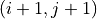

OASS for Order Execution
This tutorial is an example of applying OASS to the order execution task, which aims to determine the best time to buy and sell a stock. Similar to the algorithmic trading problem, order execution is also a practical problem in finance. The OASS library does not provide algorithms specifically for solving order execution problems, so this document will help you understand how to use OASS to develop solutions for specific problems.
In the order execution problem, suppose we need to buy a certain stock on a certain day, buying a large amount at once will incur a large impact cost. To avoid this situation, we usually need to split the order to be executed at multiple time steps. Suppose there are  time steps in a day and we need to buy the stock times. We want the average price of these buys to be as low as possible.
time steps in a day and we need to buy the stock times. We want the average price of these buys to be as low as possible.
The first step is to create a DAG. We use nodes to represent the state of the trader at each time node, i.e.,  , where denotes the time step and denotes the number of times the trader has bought. In addition, an additional node indicates the state after all buys have been executed. Using as an example, this DAG is shown in the figure below.
, where denotes the time step and denotes the number of times the trader has bought. In addition, an additional node indicates the state after all buys have been executed. Using as an example, this DAG is shown in the figure below.
Next, consider how to define the node reward and the edge reward. When the trader chooses not to buy, the node is shifted to with an edge reward of 0. When the trader chooses to buy, moving from node to  the edge reward is which is the average price of the day’s buy minus the price of the current time step buy. The node reward is not needed in this problem, so it is set to 0.
import matplotlib.pyplot as plt
import numpy as np
import torch
import oass
The dataset used in this problem is exactly the same as in OASS for Algorithmic Trading. HEAD_MASK is also applied, but TAIL_MASK is not required.
SEQUENCE_LENGTH = 240
HEAD_MASK = 20
TAIL_MASK = 220
INPUT_SIZE = 49
DEVICE = torch.device("cuda")
def get_dataloader(file_path):
data = np.load(file_path, allow_pickle=True)
input_data = torch.tensor(data["input_data"], dtype=torch.float)
buy_price = torch.tensor(data["buy_price"], dtype=torch.float)
sell_price = torch.tensor(data["sell_price"], dtype=torch.float)
dataset = torch.utils.data.TensorDataset(input_data, buy_price, sell_price)
data_loader = torch.utils.data.DataLoader(
dataset=dataset,
batch_size=32,
shuffle=True
)
return data_loader
data_loader_train = get_dataloader("data/at/example_train_data.npz")
Create a DAG that we described above.
def build_DAG(sequence_length):
G = oass.StaticDirectedAcyclicGraph()
for i in range(sequence_length):
for si in range(5):
G.add_node((i, si))
G.add_node(("final",5))
for i in range(sequence_length-1):
for si in range(5):
G.add_edge((i,si), (i+1,si))
if si==4:
G.add_edge((i,si), ("final",5))
else:
G.add_edge((i,si), (i+1,si+1))
return G
G = build_DAG(SEQUENCE_LENGTH)
An LSTM-based neural network model is constructed for decision making. This model has roughly the same structure as the one we used in the algorithmic trading problem, differing only in the output layer.
class TradeModel(torch.nn.Module):
'''A basic model for OASS. This model contains a multilayer LSTM and a Fully connected layer.
Args:
input_size (int): The dimension of environment state at one time step.
hidden_size (int): The hidden_size in LSTM module.
num_layers (int): The number of layer in LSTM module.
dropout (int): The dropout probability of each layer except the last layer in LSTM module.
'''
def __init__(self, input_size, hidden_size=32, num_layers=3, dropout=0.2):
super(TradeModel, self).__init__()
self.LSTM_layers = torch.nn.LSTM(
input_size=input_size, hidden_size=hidden_size, num_layers=num_layers, dropout=dropout, batch_first=True)
self.actor_layer = torch.nn.Linear(hidden_size, 10, bias=False)
def forward(self, x):
'''Forward function.
Args:
x (torch.tensor): A batch of sequencial environment states. The shape is ``(batch_size, sequence_length, input_size)``.
Returns:
action_prob (torch.tensor): The model\'s output. The shape is ``(batch_size, sequence_length, 5, 2)``.
'''
x = self.LSTM_layers(x)[0]
action_prob = self.actor_layer(x)
action_prob = action_prob.reshape((
action_prob.shape[0],
action_prob.shape[1],
5, 2
))
action_prob = torch.softmax(action_prob, axis=-1)
return action_prob
model = TradeModel(input_size=49, hidden_size=16, num_layers=3).to(DEVICE)
optimizer = torch.optim.Adam(model.parameters(), lr=1e-3)
gradient_calculator = oass.GradientCalculator()
A sequence is selected in the training data to show the decisions of the model before training.
example_data = np.load("data/at/example_train_data.npz", allow_pickle=True)
example_id = 0
example_input_data = example_data["input_data"][example_id: example_id+1]
example_buy_price = example_data["buy_price"][example_id: example_id+1]
example_sell_price = example_data["sell_price"][example_id: example_id+1]
example_data.close()
def show_decision(gradient_calculator, model, input_data, buy_price, sell_price):
with torch.no_grad():
action_prob = model(torch.tensor(input_data, device=DEVICE, dtype=torch.float))[0, :, :, :]
action_prob[:HEAD_MASK, :, 0] = 1
action_prob[:HEAD_MASK, :, 1] = 0
action_prob = action_prob.reshape((action_prob.shape[0]*5, 2)).cpu().numpy()
path = gradient_calculator.get_path(G, action_prob, (0, 0))
buy_price, sell_price = buy_price[0], sell_price[0]
plt.figure(figsize=(16,3))
plt.plot(buy_price, label="buy price")
plt.plot(sell_price, label="sell price")
sell_point = [path[i][0] for i in range(len(path)-1) if path[i+1][1]>path[i][1]]
for i,p in enumerate(sell_point):
if i==0:
plt.axvline(p, color="#d62728", label="sell point")
else:
plt.axvline(p, color="#d62728")
plt.legend()
show_decision(gradient_calculator, model, example_input_data, example_buy_price, example_sell_price)
Train the model and show the decisions after training.
def train_epoch(model, data_loader, gradient_calculator, G, start_node):
sum_reward, data_amount = 0, 0
for observation, buy_price, sell_price in data_loader:
# action_prob
action_prob = model(observation.to(DEVICE))
action_prob = action_prob.reshape((action_prob.shape[0], action_prob.shape[1]*5, 2))
action_prob = torch.moveaxis(action_prob, 0, -1)
# node reward
node_reward = torch.zeros((observation.shape[1]*5+1, observation.shape[0]))
# edge reward
price = buy_price / buy_price[:, 0].repeat((observation.shape[1], 1)).T
price = price - price.mean(axis=1, keepdim=True)
edge_reward = torch.zeros((observation.shape[0], observation.shape[1], 5, 2))
for si in range(5):
edge_reward[:,:,si,1] = -price
edge_reward = edge_reward.reshape((observation.shape[0], observation.shape[1]*5, 2))
edge_reward = torch.moveaxis(edge_reward, 0, -1)
# gradient
E, D = gradient_calculator.calculate_gradient(
G,
action_prob.detach().cpu().numpy(),
node_reward.numpy(),
edge_reward.numpy()
)
sum_reward += E[G.node2index[start_node]].sum()
data_amount += observation.shape[0]
# loss
loss = 0
for i, d, p in zip(range(len(D)), D, action_prob):
if d.shape[0] != 0 and i>=HEAD_MASK*5:
loss += torch.sum(-torch.tensor(d).to(DEVICE)*p)
# optimize
optimizer.zero_grad()
loss.backward()
optimizer.step()
return sum_reward/data_amount
for i in range(200):
reward = train_epoch(model, data_loader_train, gradient_calculator, G, (0, 0))
print(i, reward)
show_decision(gradient_calculator, model, example_input_data, example_buy_price, example_sell_price)
0 -0.0014942813610371248 1 -0.0014716360933819898 2 -0.0014607491839029752 3 -0.0014768458189546012 4 -0.0014477918855334143 ... 195 0.027223197131457877 196 0.027580936562050497 197 0.02900645669842168 198 0.027587657581012833 199 0.028280406162599015